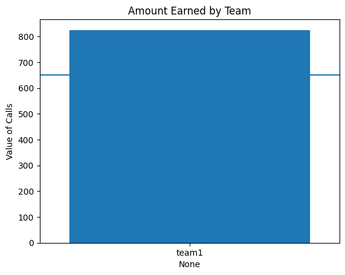

# MODULE 02 - BANK HOLDOUT GRADING
from pathlib import Path
import pandas as pd
import seaborn as sns
import matplotlib.pyplot as plt
import numpy as np
from sklearn.metrics import confusion_matrix
blue_score = 650
orange_score = 300
# READ IN THE CSV FILES
team_dir = Path("./")
teams = team_dir.glob("*-predictions.csv")
team_list = []
for team in teams:
# print(latent_file)
team_list.append((str(team).split("-",1)[0],team))
# print(team_list)Prep work:
- Download team csv predictions file
- Rename files to team8-module2-predictions.csv where team8 is the name of your team
- Make sure file is one column and remove any extra columns
- Make sure the heading is set to “predictions” (without quotes)
- Upload csv predictions to session storage area.
Click the folder icon, then click the upload icon (paper with an upward arrow)
- Run the notebook (Runtime -> Run all)
# READ IN THE MINI HOLDOUT ANSWERS
targets_file = "https://raw.githubusercontent.com/byui-cse/cse450-course/master/data/bank_holdout_test_mini_answers.csv"
targets = pd.read_csv(targets_file)
# targets# ARE THE STUDENT DATASETS THE CORRECT LENGTH
student_datasets = {}
for (group, file) in team_list:
ds = pd.read_csv(file)
if len(ds) != len(targets):
print(f"Error group {group} ds had {len(ds)} rows instead of the expected {len(targets)}. It will be excluded.")
else:
student_datasets[group] = ds
print(f"Group {group} added successfully")Group team1 added successfully# student_datasetsdef recommended_grade(amount):
'''
A simple min max scaler to identify a recommended score for the holdout set
'''
min_allowed = orange_score
max_allowed = blue_score
if amount>max_allowed:
return 100
elif amount<min_allowed:
return 0
else:
return (amount - min_allowed) / (max_allowed - min_allowed)*100def value_of_calls(incorrect_calls, correct_calls):
'''
This function is based on assumptions about bank employee wages, time requirements,
average savings amounts, and net interest margin. Wages, average savings, and net interest margin,
were pulled from the time range of the dataset. Assumptions were made about time on call and the
percentage of a person's total savings they'd be willing to put into a term deposit.
'''
time_on_call = .5
wage = -11 # minimum wage is 6.50 and typicall teller wage is 11
call_cost = wage*time_on_call
average_savings = 4960
percent_in_term_deposit = .75
net_interest_margin = .012
positive_call_benefit = average_savings*percent_in_term_deposit*net_interest_margin
total_earned = incorrect_calls*call_cost + correct_calls*call_cost + correct_calls*positive_call_benefit
return total_earnedresults_dict = {}for group, student_ds in student_datasets.items():
student_dict = {}
cm = confusion_matrix(student_ds, targets)
# print(group,cm)
student_dict["Incorrect Calls"] = cm[1][0]
student_dict["Correct Calls"] = cm[1][1]
student_dict["Value of Calls"] = value_of_calls(cm[1][0],cm[1][1])
student_dict["Estimated Grade"] = recommended_grade(student_dict['Value of Calls'])
results_dict[group] = student_dict# results_dictresults_df = pd.DataFrame(results_dict)
results_ds_trans = results_df.transpose()
results_ds_trans = results_ds_trans.drop(columns=["Estimated Grade"])
results_ds_trans = results_ds_trans.round(2)
results_ds_trans = results_ds_trans.sort_values(by="Value of Calls",ascending=False)
# results_ds_trans.to_csv("class_results.csv")
# results_ds_trans# GENERATE GRAPHICS FOR TEAMS
# THESE CAN BE SHARED WITH THE STUDENTS
graph = sns.barplot(data=results_ds_trans,y="Value of Calls",x=results_ds_trans.index)
graph.set_title("Amount Earned by Team")
graph.axhline(blue_score)
for bar in graph.patches:
if bar.get_height() > blue_score:
bar.set_color('tab:blue')
elif bar.get_height() <0:
bar.set_color('tab:red')
elif bar.get_height() < orange_score:
bar.set_color('tab:orange')
else:
bar.set_color('tab:grey')
#The plot is shown
plt.show()
results_ds_trans
| Incorrect Calls | Correct Calls | Value of Calls | |
|---|---|---|---|
| team1 | 35.0 | 26.0 | 825.14 |